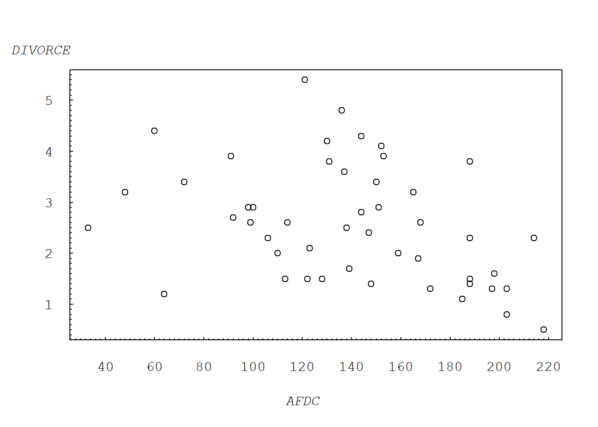
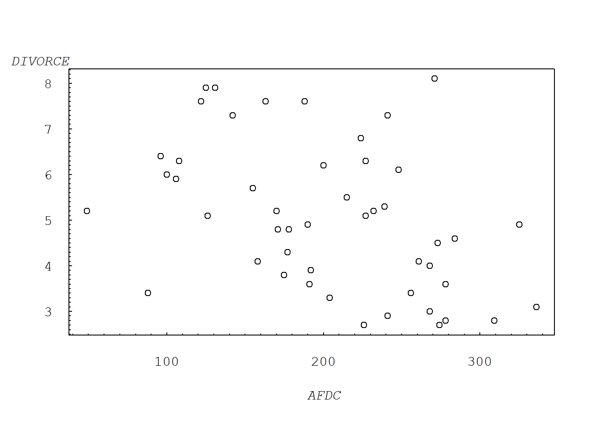
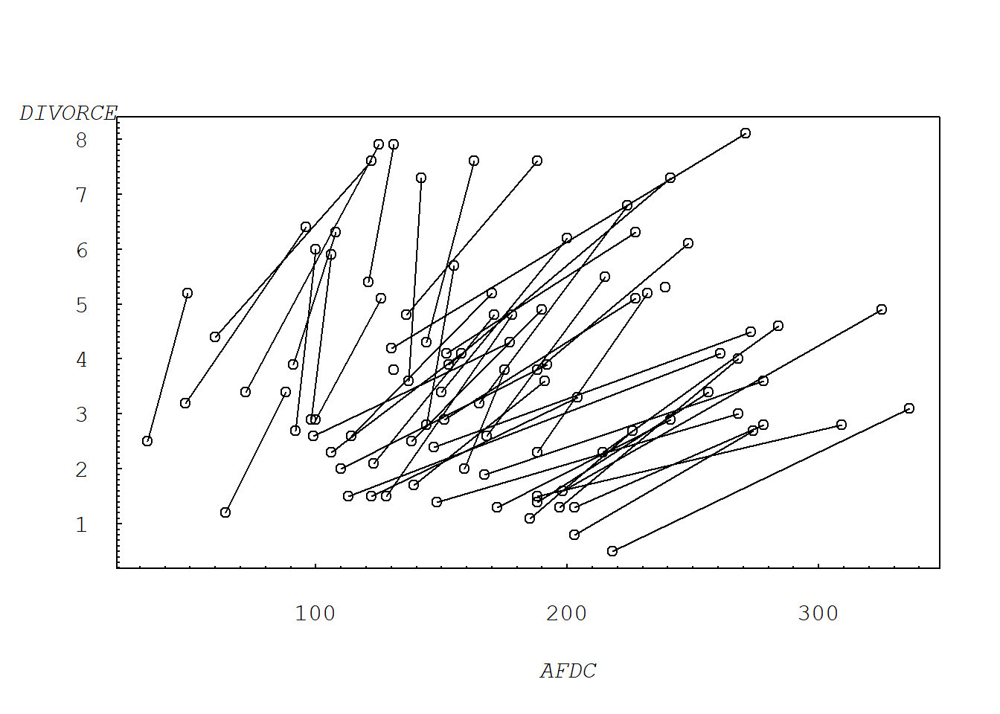
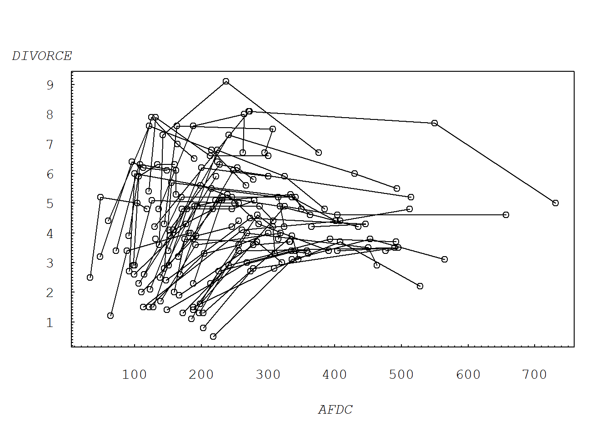
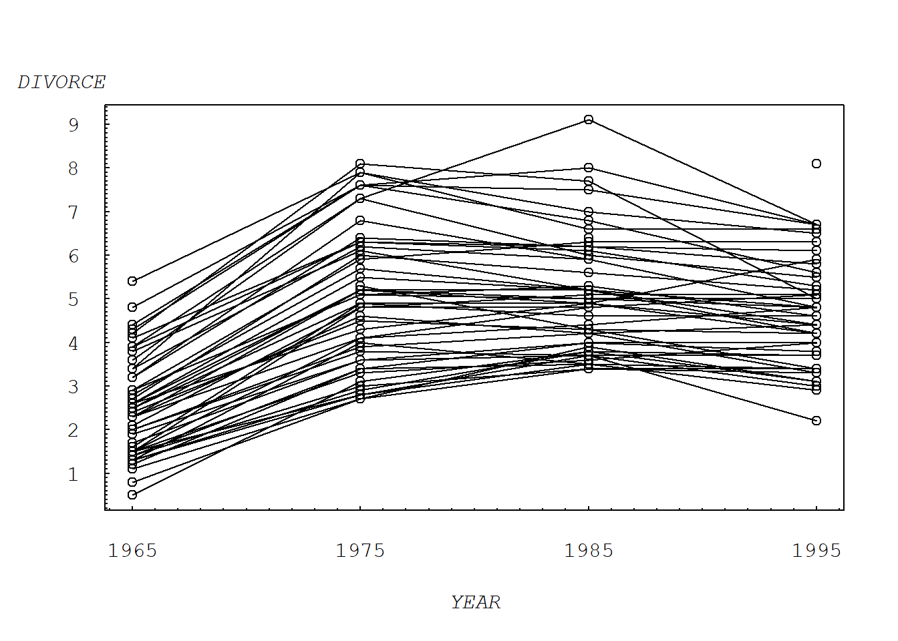

Chapter 1 Introduction
1.1 Import Data
First, we can import “Divorce.txt” downloaded from website https://instruction.bus.wisc.edu/jfrees/jfreesbooks/Longitudinal%20and%20Panel%20Data/Book/DataFiles.htm
These are data describing the divorce rate in each state. In addition, there is other socioeconomic information about a state that may be related to the divorce rate. In particular, data concerning the number of marriages and births, unemployment and crime rates, and AFDC (Aid to Families with Dependent Children) payments are available. In this file, data are available for the years 1965, 1975, 1985 and 1995. The information provided by this study is potentially useful for governing agencies in budgeting for social needs such as judicial and welfare services that are affected by divorce. The data for the study were collected from various U.S. Statistical Abstracts. Divorce rate is defined as the number of divorces and annulments per thousand population per state. The independent variables include the number of marriages and live births per thousand population, the total unemployment rate as percent of total work force, the average monthly AFDC payments per family, and the total number of criminal offenses known to the police (murder, rape, robbery, aggravated assault, burglary, larceny, and motor vehicle theft). Some of the data points contain missing observations due to unavailability, and Nevada is unusual due to its uniquely high and unrepresentative marriage and divorce rates. Source: U.S. Statistical Abstract, various issues.
| Variable | Description |
|---|---|
| DIVORCE | Number of divorces and annulments per state per one thousand population. |
| BIRTH | Number of live births per state per one thousand population. |
| MARRIAGE | Number of marriages per state per one thousand population. |
| UNEMPLOY | Total unemployment rate as a percentage of the total work force. |
| CRIME | Total number of criminal offenses (murder, rape, robbery, aggravated assault, burglary, larceny and motor vehicle theft) known to police per one hundred thousand population. |
| AFDC | Average monthly AFDC (Aid to Families with Dependent Children) payments per family. |
| STATE | State identifier, 1-51. |
| TIME | Time identifier, 1-4. |
# "\t" INDICATES SEPARATED BY TABLES ;
divorce = read.table("TXTData/Divorce.txt", sep ="\t", quote = "",header=TRUE)
# divorce = read.table(choose.files(), sep ="\t", quote = "",header=TRUE)Let’s have a look at the dataset. The names of variables and the first 8 rows observations.
# PROVIDES THE NAMES IN THE FILE AND LISTS THE FIRST 8 OBSERVATIONS ;
names (divorce) [1] "DIVORCE" "BIRTH" "MARRIAGE" "UNEMPLOY" "CRIME"
[6] "AFDC" "STATE" "TIME" "STATE.Name" "Region" divorce[1:8,] DIVORCE BIRTH MARRIAGE UNEMPLOY CRIME AFDC STATE TIME STATE.Name
1 2.6 19.9 8.8 4.9 6.799 114 1 1 Maine
2 2.3 19.5 13.4 2.8 6.106 188 2 1 New Hampshire
3 1.5 20.5 9.0 4.2 5.793 113 3 1 Vermont
4 1.5 18.8 7.1 4.9 15.072 188 4 1 Massachusetts
5 1.3 19.4 7.1 4.9 14.180 172 5 1 Rhode Island
6 1.3 19.2 7.4 3.9 11.749 197 6 1 Connecticut
7 0.5 18.6 7.4 4.6 22.509 218 7 1 New York
8 0.8 18.5 6.8 5.1 13.966 203 8 1 New Jersey
Region
1 New England
2 New England
3 New England
4 New England
5 New England
6 New England
7 Middle Atlantic
8 Middle AtlanticWe can check some summary statistics. The dimension of divorce.
# SUMMARY STATISTICS ;
dim(divorce)[1] 204 10A summary of variables DIVORCE and AFDC.
summary(divorce[, c("DIVORCE", "AFDC")]) DIVORCE AFDC
Min. :0.500 Min. : 33.0
1st Qu.:3.300 1st Qu.:154.0
Median :4.250 Median :224.0
Mean :4.361 Mean :245.9
3rd Qu.:5.300 3rd Qu.:315.0
Max. :9.100 Max. :731.0
NA's :12 NA's :3 sd(divorce[,c("DIVORCE")], na.rm=TRUE) #The standard deviation of DIVORCE.[1] 1.704068sd(divorce[,c("AFDC")], na.rm=TRUE) #The standard deviation of AFDC.[1] 122.2453cor(divorce$DIVORCE, divorce$AFDC, use="pairwise.complete.obs")# The correlation between DIVORCE and AFDC.[1] 0.073069621.2 Example 1.1: Divorce Rates (page 2)
1.2.1 Figure 1.1: Plot of 1965 divorce rates versus AFDC payments.
Figure 1.1 shows the 1965 divorce rates versus AFDC (Aid to Families with Dependent Children) payments for the fifty states.
# FIGURE 1.1. PLOT 1965 DATA ;
plot(DIVORCE ~ AFDC, subset=TIME %in% c(1),data = divorce, xaxt="n", yaxt="n",ylab="",xlab="")
axis(2, at=seq(0, 6, by=1), las=1, font=10, cex=0.005, tck=0.01)
axis(2, at=seq(0, 6, by=0.1), lab=F, tck=0.005)
axis(1, at=seq(20,220, by=20), font=10, cex=0.005, tck=0.01)
axis(1, at=seq(20,220, by=2), lab=F, tck=0.005)
mtext("DIVORCE", side=2, line=0, at=6, font=12, cex=1, las=1)
mtext("AFDC", side=1, line=3, at=120, font=12, cex=1)
We can also plot 1975 data following the same method.
# PLOT 1975 DATA ;
plot(DIVORCE ~ AFDC, subset=TIME %in% c(2),data = divorce,xaxt="n", yaxt="n",ylab="",xlab="")
axis(2, at=seq(2, 9, by=1), las=1, font=10, cex=0.005, tck=0.01)
axis(2, at=seq(2, 9, by=0.1), lab=F, tck=0.005)
axis(1, at=seq(0,400, by=100), font=10, cex=0.005, tck=0.01)
axis(1, at=seq(0,400, by=10), lab=F, tck=0.005)
mtext("DIVORCE", side=2, line=0, at=8.5, font=12, cex=1, las=1)
mtext("AFDC", side=1, line=3, at=200, font=12, cex=1)
1.2.2 Figure 1.2: Plot of divorce rate versus AFDC payments from 1965 and 1975.
Figure 1.2 shows both the 1965 and 1975 data; a line connects the two observations within each state. These lines represent a change over time (dynamic), not a cross-sectional relationship.
plot(DIVORCE ~ AFDC, data = subset(divorce, TIME %in% c(1, 2)), xaxt="n", yaxt="n",ylab="",xlab="")
for (i in divorce$STATE) {
lines(DIVORCE ~ AFDC, data = subset(divorce, TIME %in% c(1, 2) & STATE == i)) }
axis(2, at=seq(0, 10, by=1), las=1, font=10, cex=0.005, tck=0.01)
axis(2, at=seq(0, 10, by=0.1), lab=F, tck=0.005)
axis(1, at=seq(0,400, by=100), font=10, cex=0.005, tck=0.01)
axis(1, at=seq(0,400, by=10), lab=F, tck=0.005)
mtext("DIVORCE", side=2, line=0, at=8.5, font=12, cex=1, las=1)
mtext("AFDC", side=1, line=3, at=200, font=12, cex=1)
We can plot data for all years and connect the years.
# PLOT ALL DATA, CONNECTING THE YEARS ;
plot(DIVORCE ~ AFDC, data = divorce, xaxt="n", yaxt="n",ylab="",xlab="")
for (i in divorce$STATE) {
lines(DIVORCE ~ AFDC, data = subset(divorce, STATE == i)) }
axis(2, at=seq(0, 10, by=1), las=1, font=10, cex=0.005, tck=0.01)
axis(2, at=seq(0, 10, by=0.1), lab=F, tck=0.005)
axis(1, at=seq(0,800, by=100), font=10, cex=0.005, tck=0.01)
axis(1, at=seq(0,800, by=10), lab=F, tck=0.005)
mtext("DIVORCE", side=2, line=0, at=10, font=12, cex=1, las=1)
mtext("AFDC", side=1, line=3, at=400, font=12, cex=1)
We can also look at the multiple time series plot by the STATE.
# MULTIPLE TIME SERIES PLOT ;
divorce$YEAR=divorce$TIME*10+1955
plot(DIVORCE ~ YEAR, data = divorce, xaxt="n", yaxt="n",ylab="",xlab="")
for (i in divorce$STATE) {
lines(DIVORCE ~ YEAR, data = subset(divorce, STATE == i)) }
axis(2, at=seq(0, 10, by=1), las=1, font=10, cex=0.005, tck=0.01)
axis(2, at=seq(0, 10, by=0.1), lab=F, tck=0.005)
axis(1, at=seq(1965,1995, by=10), font=10, cex=0.005, tck=0.01)
axis(1, at=seq(1964,2000, by=1), lab=F, tck=0.005)
mtext("DIVORCE", side=2, line=0, at=10, font=12, cex=1, las=1)
mtext("YEAR", side=1, line=3, at=1980, font=12, cex=1)